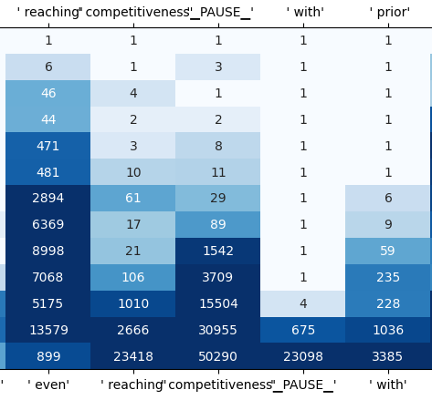
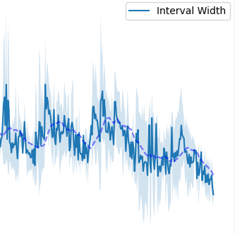
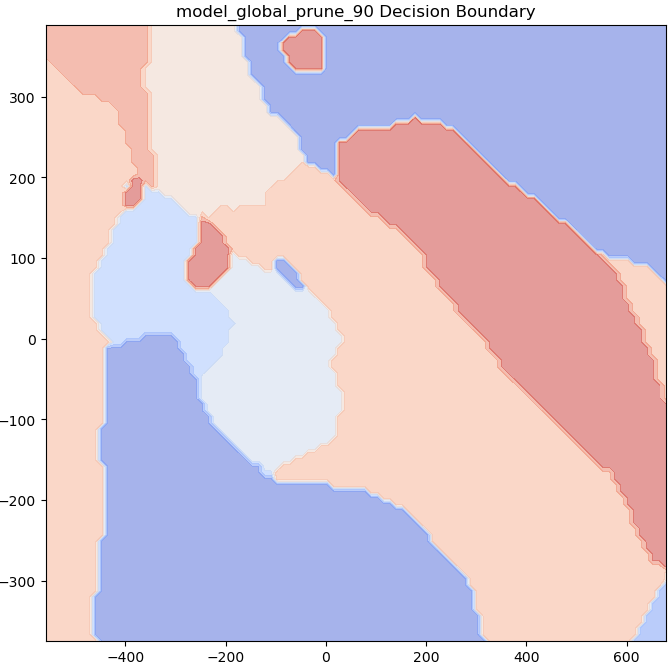
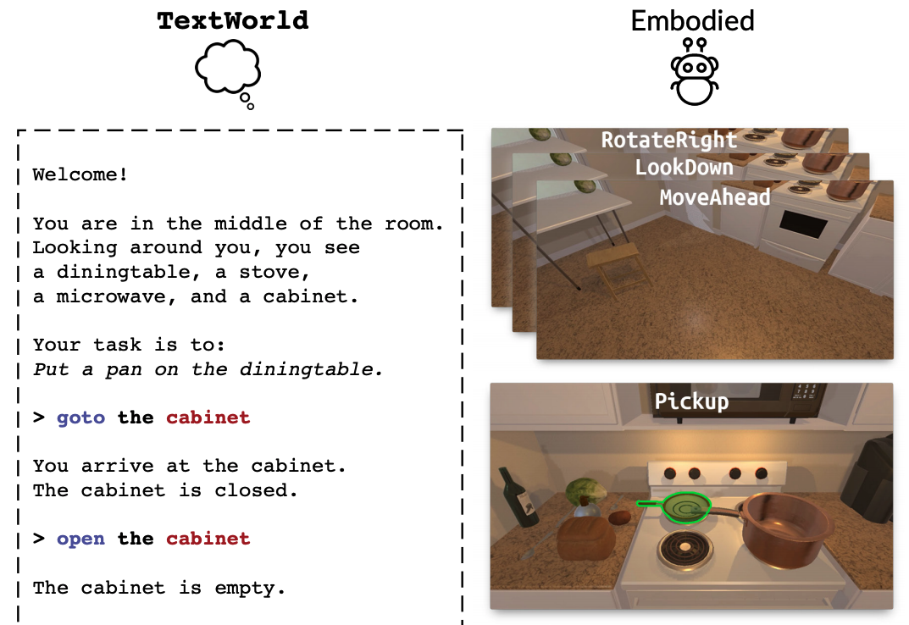

|
Alok Shah I'm a student at the University of Pennsylvania, where I study Computer Science, Mathematics, and Electrical Engineering. Outside of class, I lead MLR@Penn, the undergraduate AI and ML research organization and community at Penn and serve on the Student Advisory Board for the Wharton AI & Analytics Initiative. In my free time, I enjoy history and geography trivia, trying new food trucks and restaurants around Philly, and burning off those calories by playing pickup soccer. I'm open to collaborations or talking about anything related to ML and research -- I especially enjoy mentoring younger students interested in getting involved in the field! |
{kind=link}
Projects
I play simple tricks on machine learning models to study their training dynamics. I'm drawn to the empirical and theoretical phenomena that emerge from these experiments, and I'm interested in applying such insights to problems in language and robotics. |
|

|
Investigating Language Model Dynamics using Meta-Tokens
Alok Shah, Keshav Ramji, Khush Gupta, Vedant Gaur NeurIPS ATTRIB, 2024 Explored how to coerce communication between token-level checkpoints for more interpretable, capable models |

|
Weak-to-Strong In-Context Optimization of Language Model Reasoning
Keshav Ramji, Alok Shah, Vedant Gaur, Khush Gupta NeurIPS ATTRIB, 2024 Developed in-context optimization method leveraging weak learners to improve reasoning in strong large language models without additional finetuning |
|

|
Conformal Actor-Critic: Distriution-Free Uncertainty Quantification for Offline RL
Alok Shah, Nikhil Kumar, Mohul Aggarwal, Arjun Arasappan, Vadim Popov Integrating conformal prediction into offline reinforcement learning, providing statistically robust uncertainty quantification to curb overestimation bias of Q-values |
|

|
Deep Compression with Adversarial Robustness via Decision Boundary Smoothing
Alok Shah, Michael Shao ESE 5390 Final Project: Smoothened Adversarial retraining during compression produces compact models with stronger robustness |
|

|
AlfLLM: Limitations on LLMs as Reward Function Surrogates
Alexander Kyimpopkin, Alok Shah, Dominic Olaguera-Delogu Investigated the efficacy of using large language models as surrogate reward functions for reinforcement learning in the ALFWorld environment. |
Selected Coursework
* denotes graduate level; ** denotes doctoral level
- Honors Multivariate Analysis
- Discrete Mathematics
- Linguistics
- Data Structures and Algorithms
- Advanced Linear Algebra*
- Probability*
- Computer Systems
- Machine Learning*
- Real Analysis
- Topology*
- Differential Geometry*
- Operating System and Design
- Ethical Algorithm Design*
- Convex Optimization**
- State Estimation, Control, and Reinforcement Learning**
- Deep Learning*
- Theoretical Computer Science
- Analysis of Algorithms*
- Uncertainty Quantification**
- Learning for Dynamics and Control**
- Hardware/Software Co-Design for Machine Learning*
- Stability in Optimization and Statistics**
- Bayesian Optimization**
- Randomized Algorithms and Numerical Linear Algebra**
- Numerical Optimization for Data Science and Machine Learning
- Statistical Topics in Large Language Models**
Teaching
I enjoy teaching and have served on staff for several courses.
* denotes graduate level; ** denotes doctoral level; ^ denotes head teaching assistant
- Mathematics of Machine Learning (Eric Wong)
- Machine Learning*^ (Surbhi Goel, Eric Wong, Jake Gardner)
- State Estimation, Control, and Reinforcement Learning** (Pratik Chaudhari)
- Convex Optimization** (Nikolai Matni)